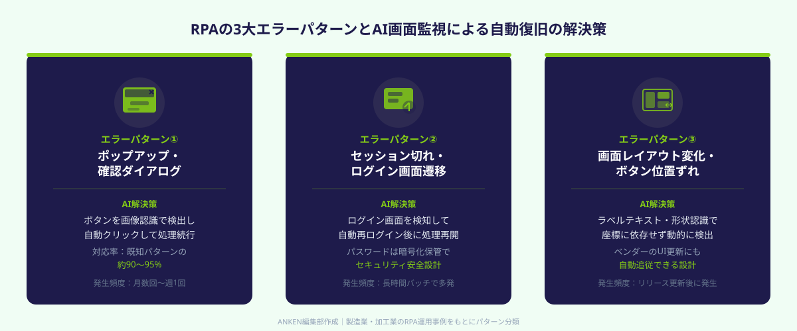
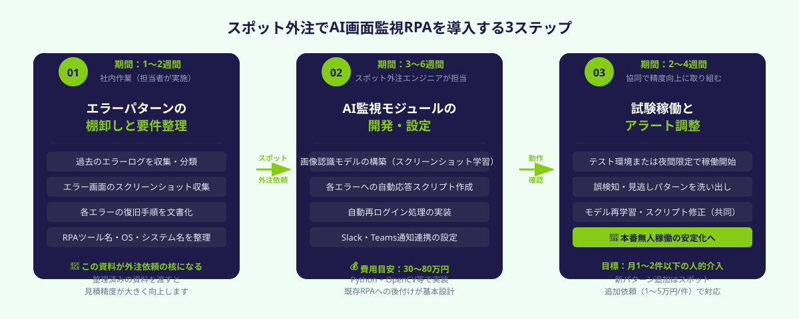

製造業のRPA無人稼働で起きるエラー停止の実態
製造業・加工業の現場では、受注入力・出荷指示・帳票出力などの定型業務をRPAで自動化し、夜間や休日も無人稼働させているケースが増えています。しかし多くの企業が「RPA導入後も担当者が毎朝エラーを確認して手動復旧している」という状況に悩んでいます。その背景には、主に3種類のエラーが繰り返し発生していることがあります。
エラーパターン① ポップアップ・確認ダイアログの出現
Windows UpdateやERP／基幹システムのバージョンアップに伴い、普段は出ないポップアップや「続行しますか？」確認ダイアログが突然出現します。RPAは「想定していない画面が出た」と判断してその場で停止し、処理がそれ以降進まなくなります。最も頻度が高く、月に数回〜週に1回発生するケースも珍しくありません。
エラーパターン② システムのログイン期限切れ・セッション切断
長時間の処理の途中で、ERPや業務システムのセッションが自動タイムアウトしてログイン画面に戻ってしまうケースです。特に処理件数が多く数時間かかる夜間バッチで発生しやすく、翌朝まで処理が0件のままというトラブルにつながります。
エラーパターン③ 画面レイアウト変化・要素の位置ずれ
基幹システムやWebアプリのUI変更（ボタン位置の移動・フォームの追加）が行われると、RPAが対象要素を見つけられず例外エラーで停止します。ベンダーが定期リリースを行うSaaS型のシステムを使っている場合は、リリースのたびに問題が起きるリスクがあります。
これら3パターンの共通課題は「RPAは想定外の状況を自分では解決できない」ことです。従来の解決策はエラー通知メールを担当者に送って手動対応してもらうことでしたが、夜間・休日に即座に対応できる人員が確保できず、翌営業日まで処理が止まったまま——という属人化した運用が続いています。この課題を解決するのがAI画面監視による自動エラー復旧です。
AI画面監視で自動復旧を実現する仕組み

AI画面監視によるRPA自動エラー復旧は、コンピュータビジョン（画像認識AI）とRPAを組み合わせて実現します。具体的には、RPAが稼働しているPCやサーバーの画面を常時（または数秒おきに）スクリーンショットで監視し、AIが「正常な画面パターン」と「異常な画面パターン」を識別して適切なリカバリ操作を自動で実行する仕組みです。
対応① ポップアップの自動クリア
AIが「閉じる」「OK」「無視」「後で通知する」といった終了ボタンを画像認識で検出し、自動クリックして処理を再開させます。Windows Updateの再起動案内、ERPの警告メッセージ、セキュリティソフトのポップアップなど、出現パターンが限られるものはほぼ確実に対処できます。新たなポップアップパターンが出てきた場合は、追加学習させるか、スポット外注で対応パターンを追加します。
対応② セッション切れの自動再ログイン
ログイン画面への遷移をAIが検知し、事前に設定したID・パスワードで自動再ログインした後、中断した処理を再開します。セキュリティ要件上、パスワードは暗号化保管し、ログイン情報を平文でスクリプトに記述しない設計にすることが重要です。スポット外注でシステムを構築する際には、この点を必ず要件に盛り込みます。
対応③ UI変化への動的対応
従来のRPAが「ピクセル座標」でボタン位置を指定していたのに対し、AI監視を組み合わせることで「ボタンのラベルテキスト」や「ボタンの視覚的な形状」で要素を特定できます。画面レイアウトが多少変わっても動的に対象を見つけて操作できるため、ベンダーの軽微なUIアップデートに対するロバスト性が大幅に向上します。
異常通知のレベル分け
自動復旧できた場合でもSlack・Teamsに「自動復旧しました」と通知し、翌朝担当者がログを確認できるようにしておきます。一方、3回連続で復旧に失敗した場合や未知のエラー画面が出た場合は「要人的対応」アラートとして担当者に即時通知するよう設定します。完全な無人化ではなく「担当者の稼働が必要な件数だけを絞り込む」設計がポイントです。
AI画面監視モジュールは、UiPath・WinActor・Power Automate Desktop・BizRobo!など主要RPAツール上に後付けする形で実装できます。既存RPAのシナリオを1から書き直す必要はなく、「監視レイヤーを追加する」イメージのため、既存資産を活かしながらコストを抑えて安定化できます。スポット外注で「既存RPAにAI監視を追加したい」と明示して依頼できます。
スポット外注で導入する3ステップ

STEP 1：エラーパターンの棚卸しと要件整理（1〜2週間）
最初に行うのは「過去のRPAエラーログの整理」です。直近3〜6か月分のエラーログ（多くのRPAツールが標準出力）を確認し、エラーの種類・発生頻度・発生時刻・復旧にかかった時間を一覧化します。このリストがスポット外注依頼の核になります。
整理する項目は次のとおりです。
・発生するエラー画面のスクリーンショット（実際に出たダイアログの画像）
・各エラーの復旧手順（今担当者が何をクリック・入力しているか）
・使用中のRPAツール名とバージョン
・RPAが稼働しているPC・サーバーのOS・スペック
・稼働対象の基幹システム名（ERP・受注システムなど）と接続方式
エラースクリーンショットと復旧手順さえ揃っていれば、スポット外注のエンジニアはAI監視モジュールの設計に即座に着手できます。スポット外注への依頼前にこのドキュメントを用意しておくと、見積もりの精度が上がり余分なコストを防げます。
STEP 2：AI監視モジュールの開発・設定（3〜6週間）
STEP1の要件定義をもとに、スポット外注でAI画面監視モジュールを開発・設定してもらいます。依頼内容は主に以下です。
・エラー画面検出のための画像認識モデルの構築（事前収集したスクリーンショットを学習データとして使用）
・各エラーパターンへの自動応答スクリプトの作成
・セッション切れ時の自動再ログイン処理の実装
・Slack・Teamsへの通知連携設定
・ログ記録・自動復旧履歴のダッシュボード作成（オプション）
技術スタックとしてはPython + OpenCV・PyAutoGUI・Tesseract OCRの組み合わせが一般的ですが、既存RPAツールのAPIやプラグインを活用する方法もあります。UiPathであればComputer Vision機能、WinActorであれば画像マッチング機能を拡張する形での実装も可能です。スポット外注のエンジニアに既存ツールを伝えれば、最適な実装方法を提案してもらえます。
開発期間の目安は、エラーパターン数が5〜10種類程度であれば3〜4週間です。既存RPAの複雑度が高い場合（処理フローが多数ある・複数システムにまたがる）は6週間程度を見込みます。
STEP 3：試験稼働とアラート調整（2〜4週間）
開発完了後は、本番環境と同等のテスト環境（または夜間のみ本番）でAI監視モジュールを稼働させ、精度を確認します。確認のポイントは「誤検知（正常画面をエラーと誤判定する）」と「見逃し（エラーなのに検知しない）」の2種類です。
最初の1〜2週間は誤検知が発生することがありますが、スポット外注のエンジニアと連携してモデルの再学習・スクリプト修正を繰り返すことで精度が向上します。2〜4週間の調整期間を経たあとは、夜間・休日の無人稼働を安定して継続できる状態になります。
本番稼働後は担当者の介入が必要なアラート件数を週単位でモニタリングし、「月に1〜2件以下」を安定稼働の目標値とするとよいでしょう。新たなエラーパターンが出現した場合はスポット外注で追加対応（1〜5万円/パターン程度）を依頼します。
ANKENでは、Python・UiPath・WinActorを使ったAI画面監視・RPA安定化の実績を持つエンジニアをスポット単位でご紹介しています。「今使っているRPAにAI監視を追加したい」「エラーパターンを整理したい」という段階からご相談ください。初回相談は無料です。
👉 無料で相談する（RPAのAI監視をスポット外注で依頼する）RPA・AI開発の経験を持つエンジニアを最短1週間でご紹介します。
費用感と導入効果の目安
AI画面監視によるRPA自動エラー復旧の導入費用は、既存RPAの複雑度・エラーパターン数・使用ツールによって異なります。
スポット外注の費用目安（開発・設定のみ）
エラーパターン5種類以下・単一システム向けのシンプルな構成であれば30〜50万円が目安です。エラーパターンが10種類を超える・複数の基幹システムにまたがる・ダッシュボードや詳細ログ機能を含むといった要件では50〜100万円程度になります。既存RPAのメンテナンス込みで依頼する場合は、別途スポット単位での追加依頼になります。
ランニングコスト
AI監視モジュール自体はRPAが稼働するサーバー上で動作するため、追加のSaaS月額コストは原則不要です。ただしSlack・Teamsへの通知連携や監視ダッシュボードにクラウドサービスを使う場合は月額数千円〜1万円程度が発生します。安定稼働後の新規エラーパターン追加は1〜5万円/件のスポット依頼で対応できます。
導入効果の試算例
夜間・休日に月15回のRPAエラー停止が発生し、1回あたり担当者が30分〜1時間かけて確認・復旧していた場合、月間7.5〜15時間の工数削減が見込めます。深夜・休日対応であれば時間単価を高く見積もると、月5〜10万円相当のコスト削減効果です。導入費用30〜50万円に対して、6〜12か月でROIが回収できる計算になります。
さらに「担当者が不在の時間帯に処理が止まって翌日に後ろ倒しになる」リスクがなくなることで、生産計画・出荷スケジュールの正確性が向上します。製造業では工程の遅延が連鎖するため、数時間の遅延回避がコスト以上の価値を生むケースも多くあります。
よくある質問
- Q. 今使っているRPAをすべて作り直さなくてもよいですか？
- A. 既存RPAはそのまま活かし、AI監視モジュールを後付けする形で実装できます。UiPath・WinActor・Power Automate等の主要ツールに対応可能です。
- Q. AIがどのくらいのエラーパターンに対応できますか？
- A. 事前にスクリーンショットを学習させた既知パターンの対応精度は90〜95%が目安です。未知パターンはアラートで通知し、追加学習で対応範囲を拡張できます。
- Q. スポット外注でどんな人材に依頼すればよいですか？
- A. Python・OpenCV・RPA経験を持つエンジニアが適任です。ANKENでは要件を伝えるだけでマッチするエンジニアをご紹介できます。
まとめ
24時間無人稼働のRPAがエラー停止するたびに担当者が手動復旧していた属人的な運用は、AI画面監視モジュールを後付けすることで自動化できます。ポップアップの自動クリア・セッション切れの自動再ログイン・UI変化への動的対応という3つの仕組みを組み合わせることで、夜間・休日の無人稼働を安定させられます。
導入のポイントは3つです。①過去のエラーログとエラー画面のスクリーンショットを事前に整理してスポット外注への依頼精度を高める、②既存RPAをそのまま活かしてAI監視レイヤーを後付けする形でコストを抑える、③自動復旧できたケースも通知ログとして残し、未知のエラーには速やかにアラートを上げる設計にする。担当者が復旧対応に追われる「RPA管理の属人化」を解消し、RPAが本来の目的である業務自動化を安定して達成できる環境を整えましょう。